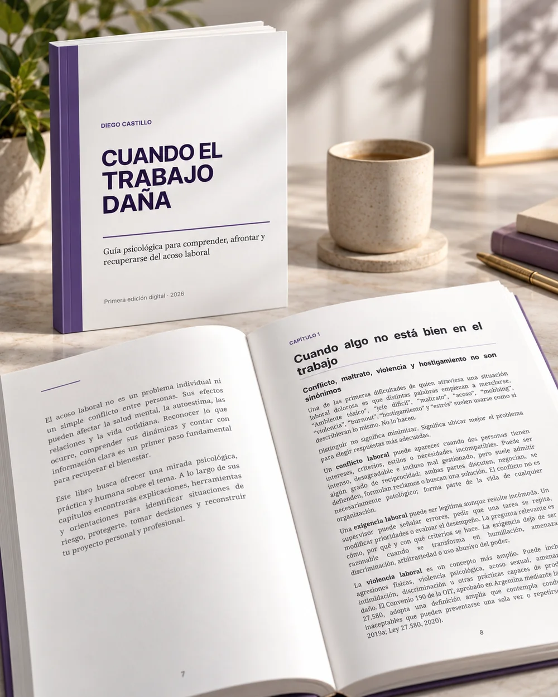

Comprender
Diferenciar conflicto, maltrato, violencia y hostigamiento, y entender cómo puede construirse una dinámica de acoso.
Una guía psicológica para comprender, afrontar y recuperarse del acoso laboral. Para poner en palabras lo que ocurre, distinguir dinámicas, comprender el impacto y recuperar margen de decisión.
Recurso psicoeducativo. No reemplaza una evaluación psicológica, médica ni el asesoramiento jurídico aplicable a cada situación.
El libro combina psicoeducación, criterios para ordenar situaciones y actividades de reflexión. La estructura acompaña desde la comprensión del problema hasta la reconstrucción y la toma de decisiones informadas.
Diferenciar conflicto, maltrato, violencia y hostigamiento, y entender cómo puede construirse una dinámica de acoso.
Organizar hechos, registrar situaciones, reconocer redes de apoyo y pensar recursos mientras la situación continúa o después de salir.
Trabajar sobre autoestima, identidad profesional, regulación emocional, autocrítica y confianza después del daño.
Conocer marcos generales de derechos y preparar consultas psicológicas, médicas, gremiales o jurídicas cuando corresponda.

La edición fue pensada para una lectura continua, pero también para volver a capítulos específicos según el momento que estés atravesando.
No hace falta estar seguro de estar atravesando “acoso laboral” para que el material resulte útil. Parte del objetivo es precisamente aprender a diferenciar y ordenar.
Puede ayudarte a organizar lo vivido, observar patrones, reconocer impacto y preparar preguntas para una consulta profesional si la necesitás.
Puede aportar lenguaje y criterios para escuchar sin minimizar, sobrediagnosticar ni apresurar decisiones que requieren contexto.
El PDF completo queda disponible de forma libre desde esta página.